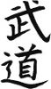

Zeytinyağının Japon mutfağında yeri olmadığı gibi, Japonya’daki güreş müsabakalarından Kırkpınarvari bir kayganlık beklememek gerekiyor. Nitekim, geleneksel Japon güreşi sumo kuru kuruya yapılıyor.
Sumo, kökleri 1500 yıl öncesine dayanan ve özellikle tanrılar arasında çok popüler bir spor. Rivayete göre, tanrı Takemikazuchi’nin rakip bir kavmin liderini sumo karşılaşmasında yenmesi ile Japon ırkının bu coğrafyadaki egemenliği başlamış. Aslında bu rivayet, Japonya’nın ve Japonların kökeni ile ilgili başka efsanelerle çelişiyor, ama fazla teknik detaya girmeyeyim. Sonrasında, bu spor insanlar arasında da büyük rağbet görmeye başlıyor.
Sumonun kökenleri tamamen dini ritüellere dayanıyor. Genelde iyi bir mahsül için yapılan ayinlerde çeşitli danslar, gösteriler ile birlikte sumoya da yer verilmiş. Daha sonra imparatorluk sarayının seremonileri arasına dahil edilen sumo, biraz daha rafine olarak kural ve teknikleri bugünkü haline yaklaşmış. Şehirli kültürünün giderek yerleştiği Edo döneminde de sumo, yeni kentli sınıfın en büyük eğlencelerinden birisi olmuş ve profesyonel sumo kulüpleri turnuvalar düzenlemeye başlamış.
Sumo karşılaşmaları halen Şinto tapınağının “himayesinde” gerçekleştiriliyor. Yaklaşık beş metre çapındaki sumo ringi (dojo) özel bir kilden yapılıyor ve zemini yumuşatmak için kumla kaplanıyor. Dojonun üstünde, salonun tavanından aşağıya doğru bir Şinto tapınağı çatısı sarkıtılıyor, yani sumo karşılaşmaları halen bir tapınak çatısı altında yapılıyor. Sumo hakemleri de (gyojiler) Şinto rahiplerinin tören giysilerini giyiyorlar.
Sumo turnuvasının yapıldığı spor salonu Kokukigan’ın önüne vardığımda büyük bir kalabalıkla karşılaştım. Fanatikler, hayranı oldukları sumocuların Kokukigan’a gelişini bekliyorlar. Yukatasını giymiş, yuvarlanarak gelen güreşçileri gören hayranlar, kendilerinden geçerek yüz elli-iki yüzer kiloluk idollerine tezahürat yapıyorlar. Sumo güreşçilerinin en üst tabakası (yokozuna) Japonyanın en zengin, meşhur ve saygı gören kişileri arasında.
Sumo güreşleri, sabahları 08.30’da yose-daiko denilen, “Sumoya bir ikiiii... Haydi, herkesi bekliyoruuuz...” mealindeki davullarla açılıyor, akşam 18.00’de de hane-daiko denilen, “Bugünlük bu kadar, yarın gene bekleriz” temalı davul dıngırtısı ile sona eriyor. Bu davullar Kokukigan’ın önündeki bir kulenin tepesinde çalınıyor. Kulenin yüksekliği de rastgele belirlenmiş değil; Kokugikan, Sumida Nehrine yakın bir mesafede ve kulenin yüksekliği ile nehirle yaptığı açı, davul seslerinin nehirden yansıyarak karşı tarafta da en gür biçimde duyulacağı şekilde hesaplanmış.
Sumo karşılaşmaları sabah erkenden çömezlerin müsabakaları ile başlıyor ve öğleden sonradan itibaren maku-uchiler (1. lig güreşçileri) mindere, pardon toprağa çıkıyor. Sumo turnuvaları bir yıl boyunca on beşer gün süren altı etap halinde gerçekleştiriliyor, böylece halk yılın doksan günü sumo seyredebiliyor.
Salona giriyorum, henüz çömezlerin karşılaşmaları devam ediyor. Ancak bu gençlerin bile büyük hayran kitleleri var. İki sumocu ringe çıkıyor ve az ilerimde duran bir kız çığlık çığlığa tezahürata başlıyor. Sumocular ring ritüellerini yerine getirirken kız da bacağım kadar teleobjektif takılı bir fotoğraf makinesi ile şakır şakır resim çekiyor, herhalde adamın göbek deliğindeki tüylere kadar detay alıyor. Karşılaşma başlıyor, sumoculardan biri diğerini tuttuğu gibi yere çarpıyor, yanımdaki kız avaz avaz ağlayarak salondan çıkıyor ve bir daha kendisinden haber alınamıyor.
Sumo güreşçileri, Japonya denince herkesin gözünün önünde beliren en bilindik sembollerden; enleri boylarına eşit, saçları son derece yaratıcı topuz modelleri (chonmageler) ile süslenmiş, bir zamanlar Fırt’ta yayımlanan Arap Kadri’ninkine benzer bir don giymiş tombul arkadaşlar. Büyük bir özenle hazırlanan ve dünya kuaförler yarışmalarında derece alabilecek gösterişteki saç modelleri sadece sumocuların güzel görünmelerine hizmet etmiyor; meslek icabı ara sıra kafa üstü yere çakılmak zorunda olan güreşçilerin başlarına yumuşak bir destek görevi de görüyor. Chonmageler sumocuların bir anlamda gururu, kimliği; eğer bir sumocu görürseniz sakın “Saçın da ne güzelmiş” diye elleşmeye kalkmayın, kendinizi bir anda sekize katlanıp düğüm atılmış vaziyette bulabilirsiniz.
İlk bakışta hantal bir yağ tulumu görüntüsü verseler de inanılmaz kuvvetli, esnek, dengeli ve çevikler. Karşılaşma öncesi yaptıkları esneme hareketlerini ve ritüel gösterileri evde deneyeyim dedim, bacaklarım ayrılıyordu. Hepsi özel diyetlerle beslenen bu arkadaşlar, çocukluklarından itibaren sumo çiftliklerinde besiye tutuluyorlar. Sumo profesyonel bir spor ve bu âleme giren bir daha çıkamıyor. Zaten yılda altı turnuvaya katılıyorlar, on beşer günden doksan günleri karşılaşmalarla, geri kalanı da antrenman ve beslenme ile geçiyor. Sabah erken saatlerden itibaren yemek, temizlik, yemek, antrenman, yemek, ve bir daha yemek şeklinde geçen bir programları var.
Madem ki yiyip yiyip kas yapacaklar, neden Arnold gibi üçgen bir vücut yapmıyorlar da içki göbeği bırakan vatandaşlarımız gibi yuvarlak bir şekle bürünüyorlar diye merak edebilirsiniz... En azından ben ettim. Hem güçlü ve hacimli hem de geniş omuzlara, pazılara sahip olabilir, kadın hayranlarınızın sayısını da artırabilirsiniz. Ancak sumoyu biraz seyrettikten sonra işin esprisi ortaya çıkıyor: Sumo, çok büyük oranda dengeye dayanan bir spor ve vücudun ağırlık merkezinin mümkün olduğunca yere yakın olması lazım. Bu yüzden kilolarını özellikle bacakların üst kısımlarına ve göbek bölgesine almaya gayret ediyorlar; ince belli, geniş omuzlu bir yakışıklının sumoda fazla şansı olmuyor.
Zaten sumo güreşçilerinin kızların hayranlığını kazanmak gibi bir sıkıntıları yok, çünkü bu halleriyle bile Japonya’nın en popüler figürleri durumundalar. Her birinin ayrı bir hayran kitlesi, ayılan bayılan fanatikleri var. Ancak bir sumocuya fazla gönül bağlamamak lazım, çünkü ne de olsa aşırı kilolular ve kısa bir ömürleri oluyor. Sloganları, “Hızlı yaşa, genç öl, cesedin tombul olsun”.
Bu yüzden, yeni nesil içinde sumo güresçisi olmak isteyenlerin sayısı giderek azalmış ve yurtdışından devşirme sumocu getirme dönemi başlamış. Pazarı ilk keşfedenler, cüsse konusunda hiçbir sıkıntıları olmayan Hawaiili Amerikalılar olmuş. Bu ilk devşirme sumocular 250 kiloluk vücutlarıyla ringe girip ortalığın tozunu atmaya başlamışlar, ancak devirleri fazla uzun sürmemiş. Japon seyirciler, irilik kadar çeviklik ve teknik de görmek istiyor. Son zamanlarda, Rus, Moğol, Bulgar, Gürcü, Estonyalı gibi güreşe aşina olan toplumlardan gelme sumocular Japonya’da başarı kazanmaya ve yükselmeye başlıyorlar.
Sumoda kural gayet basit: Rakibini ya devireceksin ya da ringin dışına iteceksin. Vücudunun ayak tabanları dışında bir noktası yere değdiğinde veya ayağının ucu bile ringin dışına çıktığında bir sumocu karşılaşmayı kaybeder. Zaten bir sumo karşılaşması nadiren altı yedi saniyeden fazla sürer. Ancak kuralları bu kadar basit ve karşılaşmaları bu kadar kısa süren bir sporda bile insanı hayrete düşürecek kadar çok ve değişik teknik var. Sumoda güreşçilerin kilosuna göre kategori ayrımı yok, zayıflar tombullara karşı çeviklik avantajını kullanmaya çalışıyor.
Sumo ritüelleri Şinto dini kökenli, hakemler Şinto rahibi kılıklı, dojo da zaten bir tapınak gibi. Yani, pek laik bir spor olduğu söylenemez. Güreşçiler doğu ve batı grubu olarak iki koldan dojoya çıkıyorlar. Üzerlerinde sponsorları tarafından hazırlanan, kesho mawashi denilen, değeri 4000-5000 dolar civarı olabilen özel bir kıyafet oluyor. Podyumda salınan mankenler gibi kıyafetlerini sergiledikten sonra, doğu ve batı grubunun ilk güreşçileri dojoya çıkıyor ve ilk karşılaşma başlıyor.
Karşılaşma öncesi shikiri denilen bir ritüel var ki seyirciye eziyet... Kırkpınardaki peşrevi andıran shikiri, güreşçiler arasında bir soğuk savaş, bir çeşit konsantre olma, karşısındakini korkutma, sinir harbi, vesaire... Güreşçiler önce bir önceki güreşin yenilgisinin kötü ruhunu kovmak için ringe tuz serpiyor, daha sonra bacaklarını sırayla yana doğru doksan derece açarak ısınma hareketlerini yapıyor ve avuç içlerini birbirine göstererek “silahsız” olduğunu ispatlıyor. Ardından birbirine pis pis bakıyor, etrafı kesiyor, güreşe başlama pozisyonu alıyor, vazgeçip ringe tuz serpiyor, tekrar başlama pozisyonuna geçiyor, vazgeçip kızgın boğa gibi eşeleniyor ve bizleri çileden çıkarıyor.
Eskiden sumoda shikiri için tanınan süre sınırsızmış; güreşçiler dakikalarca, saatlerce homurdanarak birbirlerini süzerlermiş. Daha sonra bu süre on dakikaya ve sonunda dört dakikaya indirilmiş. Güreşin kendisi zaten beş saniye sürüyor; kapışma başlayınca ringde toz dumana katılıyor ve müsabaka Richter ölçeğiyle altı şiddetinde bir yer sarsıntısı ile sona eriyor. Güreşçilerin en büyük korkusu donlarının sıyrılması; ama neyse ki donlarını oldukça sıkı bağlıyorlar.
Maku-uchiler (1. lig güreşçileri) arasında ilk karşılaşmaları maebashiler yapıyor. Maku-uchiler arasında Kırkpınar’daki sınıflandırmaya benzer birkaç değişik kategori var: maebashi, komusubi, sekiwake, ozeki ve yokozuna. Yokozuna, bizdeki başpehlivan gibi, çok zor edinilen, ancak güreşçinin spor hayatı boyunca taşıyabildiği bir ünvan. Diğer kategoriler arasında alınan sonuçlara göre terfi ve tenzil mümkün; ancak bir kez yokozuna olan artık hep yokozunadır. Bir turnuvada başarısız olsa bile ünvanını korur; ne zaman ki başarı grafiğinde sürekli bir düşüş başlar, ondan artık kendi adabıyla sumoyu bırakması beklenir.
Tabii sumoyu bırakmak da öyle sessiz sakin olmuyor. Sumocuların en gösterişli alamet-i farikalarından olan chonmage bir törenle kesiliyor ve saçlarına veda eden bir güreşçi artık aktif spor hayatından ayrılmış oluyor. Tabii ki saçını kestiren sumocular tamamen âlemden kopmuyorlar. Sumo kulüplerinden birinde antrenör ya da yönetici olarak çalışmaya devam ediyorlar. Restoran açan, güreşçilerin tombul olmasını sağlayan yiyecekleri ağız tadına göre pişiren şeflere de rastlanıyor. Chanko-nabe denilen, sumocuları besledikleri bu yemekler gerçekten lezzetli ve tam bir protein deposu. Bir keresinde gittiğim bir chanko-nabe restoranında mümkün olan en ufak menüyü sipariş etmeme rağmen, önüme yarım metre çapında bir kase geldi; lezzetli görünen bir sıvının içinde yüzen envai çeşit sebze, mantar, ot vs. arasından menüde yazan deniz mahsülünü bulmaya çalıştım. Hashime (yemek çubuklarıma) devasa bir balık parçası takıldı ki herhalde balığın kendisinin de sumocudan aşağı kalır cüssesi yoktu. Ama gerçekten çok lezzetli bir yemek yediğimi söyleyebilirim.
Sabahtan akşama kadar süren sumo karşılaşmalarına gitmek, müsabakaları seyretmek kadar arkadaşlarla görüşme, yiyip içme, hatta uzanıp uyuma amaçlı olabiliyor. Ringe en yakın olan localar birkaç metrekarelik teraslar halinde düzenlenmiş; tabii böyle bir locanın fiyatı astronomik boyutlarda. Locaları büyük şirketler, zengin fanatikler çok önceden kapatıyorlar; karşılaşma günü locaya rahatça seriliyor, pikniğe gelmiş gibi önlerine sofralarını kurup yemeğe başlıyorlar.
Ancak bu localarda can güvenliği yok; siz tam çorbanızı yudumlarken ringden uçarak gelen bir sumocu tabağınızın içine düşebilir. Allah göstermesin, gözünüze falan batabileceği gibi, arkadaş kucağınızın üstüne de iniş yapabilir. Sizi de eve kapının altından kaydırarak bırakırlar. Bütün bu risklere rağmen, bir sumo karşılaşmasına gidip ön localarda oturmak her Japonun en büyük hayallerindendir.
Salonda nerede oturursanız oturun, onlarca salon görevlisi size servis yapmaya hazırdır. Yer göstericilikten garsonluğa kadar her işe gelen bu görevliler, bitmez tükenmez bir enerjiyle salonda koştururlar. Dediğim gibi, sumo bahanedir, insanlar buraya yiyip içmeye gelmiştir. Düşünsenize, İnönü Stadındasınız, parmağınızı şıklatmanızla birlikte bir delikanlı yanınıza koşuyor, “Buyur abi, ne istemiştin?” diyor; “Bana bir sushi tabağı ile iki bira kap gel” diyorsunuz... Koltuklar bile amaca uygun olarak yapılmış ve her koltuğa takılı bir şişe açacağı standart olarak mevcut.
Sonuçta sumo, sadece bir spor karşılaşması olarak değil, şehir kültürünün oluşmasıyla şekillenen dini, sosyal ve kültürel bir olgu olarak yaşamaya devam ediyor.